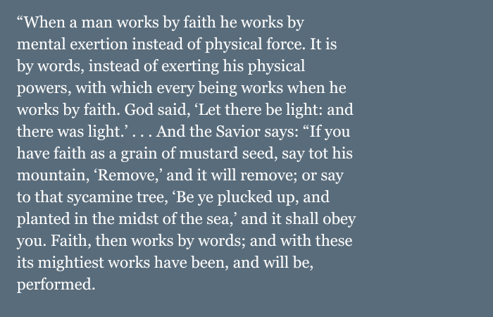

"...that the Holy Ghost may have place in their hearts,"
I believe that the second step to faith in Jesus Christ is to believe Him. It is possible to believe in His divine identity, yet not believe or trust in the things He taught. As Moroni taught, when we have faith in Jesus Christ, the Holy Ghost has place in our hearts and will testify of truth in Christ's teachings. When the Lord promises comfort, transformation, and salvation, do I believe Him?
1 / 3
"It is by faith that miracles are wrought"
“Faith precedes the miracle. It has ever been so and shall ever be. It was not raining when Noah was commanded to build an ark. There was no visible ram in the thicket when Abraham prepared to sacrifice his son Isaac. Two heavenly personages were not yet seen when Joseph knelt and prayed. First came the test of faith – and then the miracle. Remember that faith and doubt cannot exist in the same mind at the same time, for one will dispel the other. Cast out doubt. Cultivate faith.”
(Thomas S. Monson “The Call to Serve,” Ensign, Nov. 2000, pp. 48-49)
2 / 3
"For no man can be saved,[...]save they shall have faith in his name"
The sole purpose of Christ’s teachings, example, and atoning sacrifice is “to bring to pass the immortality and eternal life of man” (Moses 1:9). The Lord chooses us. Every invitation that the Lord extends is to give us the opportunity to become more like Him and be blessed. He loves us the way that we are right now, but He is not contempt with leaving us the way that we are.
3 / 3

Joseph Smith
Lectures on Faith, 72-73— The Pearl of Great Price Student Manual, p. 7